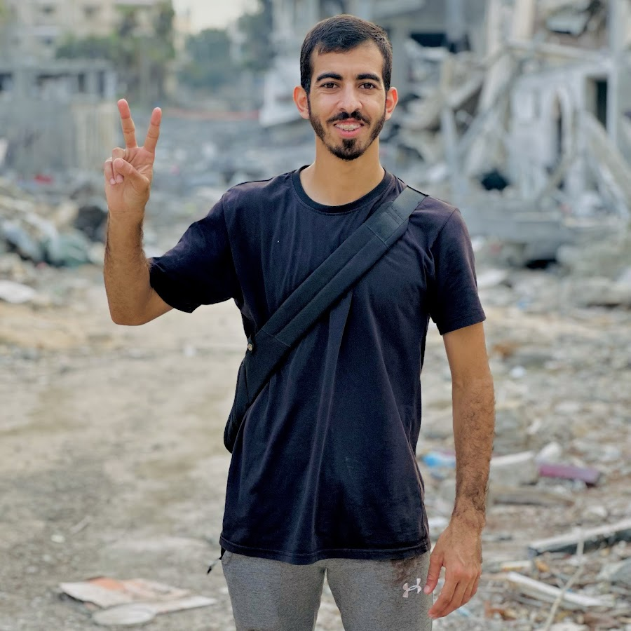

Experience of someone who traveled to Gaza
- saleh aljafarawi
- Journalist
- Current Company: Gaza University
- Saleh Aljafarawi is a Palestinian vlogger from Gaza known for documenting the aftermath of the ongoing Israel conflict.
- You can contact him on
Places that he visited:
A Guide to Witnessing Gaza’s Reality
Saleh Aljafarawi’s Reflections from His Visit to War-Torn Gaza
- Learn a Few Basic Phrases in Arabic:Saleh noted that even in times of hardship, saying simple words like "Marhaba" (Hello) or "Shukran" (Thank you) can bring a moment of warmth and connection. The people of Gaza, despite their struggles, still show hospitality and kindness.
- Use Public Transport or Walk the Streets:Public transport in Gaza is minimal due to the devastation. Saleh found that walking through the streets gave him a closer look at the impact of the war. He passed by collapsed buildings, makeshift shelters, and saw children playing in the ruins — a stark reminder of the resilience of the local spirit.
- aste the Local Cuisine in the Face of Adversity: Even amidst the conflict, the people of Gaza continue their traditions. Saleh witnessed families sharing falafel, hummus, and other simple meals. The familiar smell of knafeh from a small bakery that managed to keep running filled the air, bringing a sense of normalcy to a surreal situation.
- Walk and Observe the Life Amidst the Rubble: Saleh recommends taking a moment to walk around, not as a tourist, but as an observer of the incredible strength and perseverance of the Gazan people. Every alleyway tells a story — of survival, of loss, but also of hope.
Places Saleh Hopes to See Rebuilt One Day:
- Al-Omari Mosque: Although he couldn’t visit due to the damage, Saleh looks forward to a time when this historic mosque is fully restored, and prayers can be held without fear.
- Al-Shifa Hospital: Saleh visited this place, witnessing the crowded hallways filled with the injured, hoping one day to see it not as a warzone but as a place of healing without the chaos.
- The Iconic Gaza Port: Saleh dreams of a day when he can visit this port, known for its history and beauty, without seeing the remnants of bombings and naval blockades.